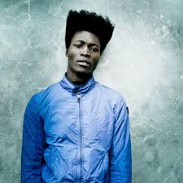

Benjamin Clementine
Benjamin Sainte-Clémentine (/klɛməntaɪn/; born 7 December 1988)[1] is an English artist, poet, vocalist, composer, and musician.
Born and raised in London, England, Clementine later moved to Paris, France becoming homeless as a teenager. There, his performances helped him to become a cult figure in the music and art scene. Moving back to London, he made his TV debut on the BBC programme Later With Jools Holland in 2013. A number of critics described him as becoming one of the great singer-songwriters of his generation and the future sound of London, whilst struggling to place his music in any one genre.
Considered by The New York Times as one of the 28 geniuses who defined culture in 2016, Clementine's compositions are musically incisive and attuned to the issues of life but also poetic, mixing revolt with love and melancholy, sophisticated lyricism with slang and shouts, and rhyming verse with prose monologues. He moved to popular art music, breaking free from traditional song structure, inventing his own dramatic and innovative musical territory. He is noticeably seen topless and barefoot onstage, dressed entirely in black or dark grey, with a long, wool trench coat.
Clementine's debut album At Least for Now won the 2015 Mercury Prize but fared better across mainland Europe. At the end of 2015, Clementine was included in The Guardian's New Year's honours list to celebrate heroes of 2015. Debrett's and the London Evening Standard named him one of the most influential people in Britain.